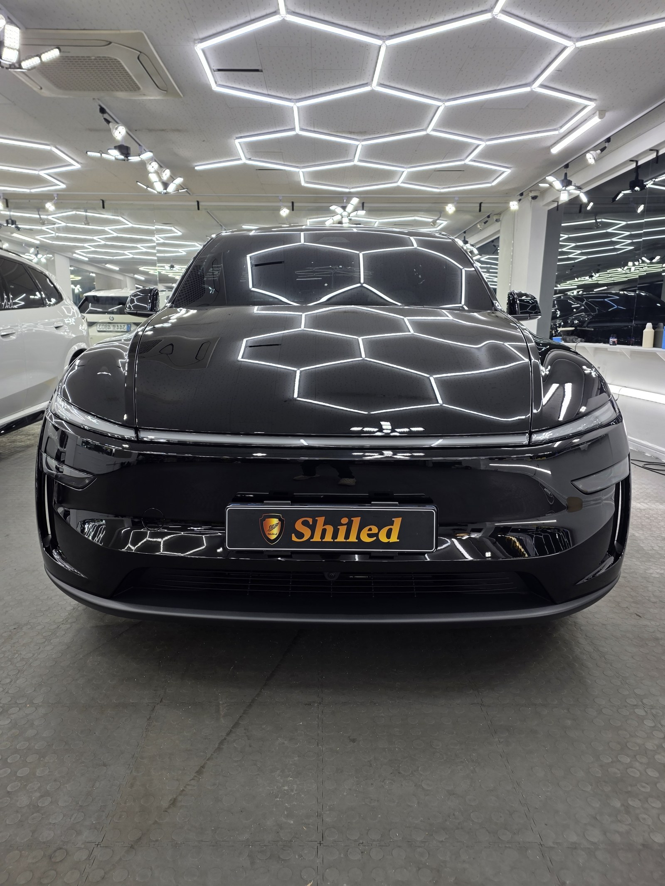
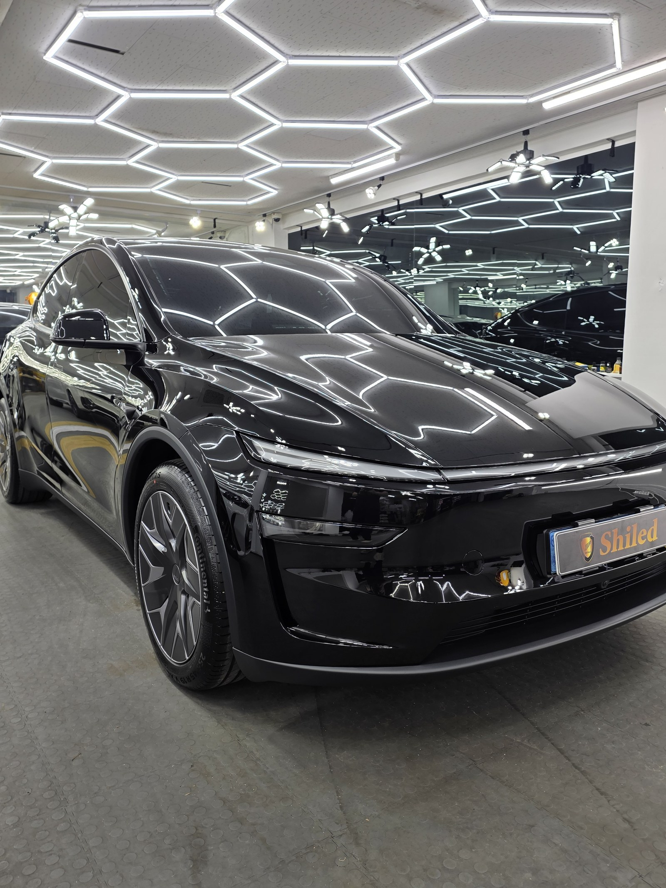
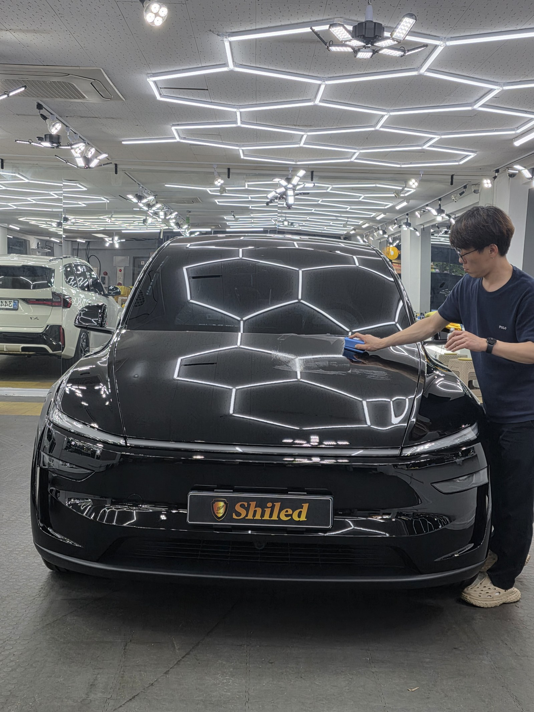
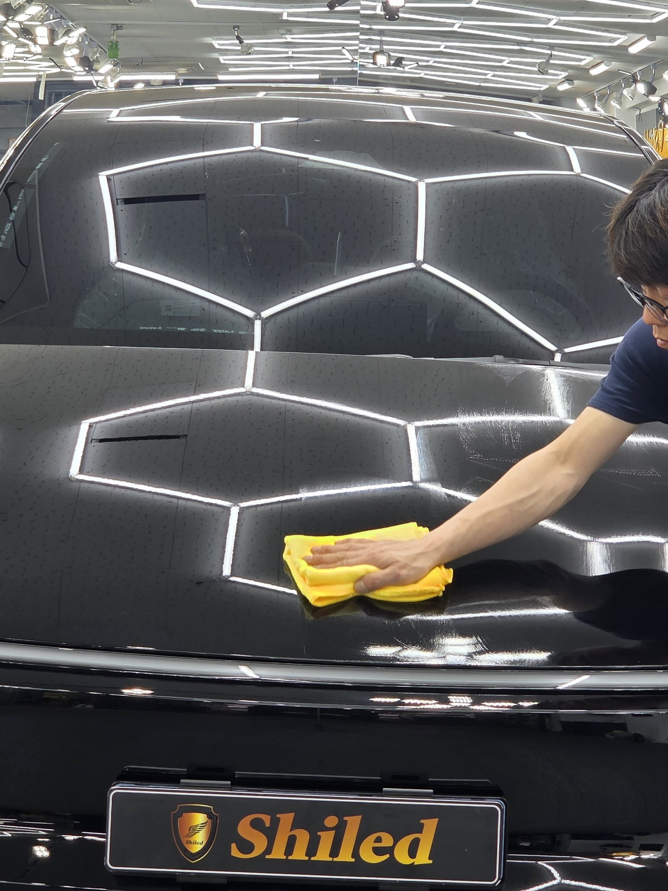
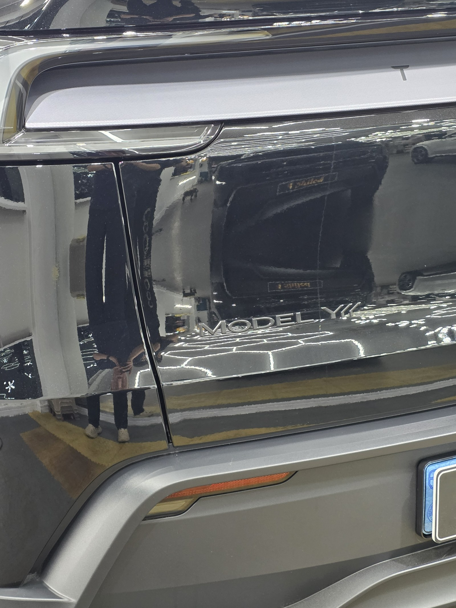
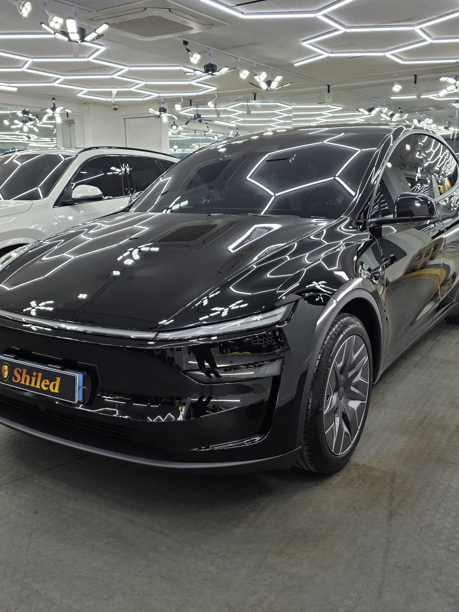
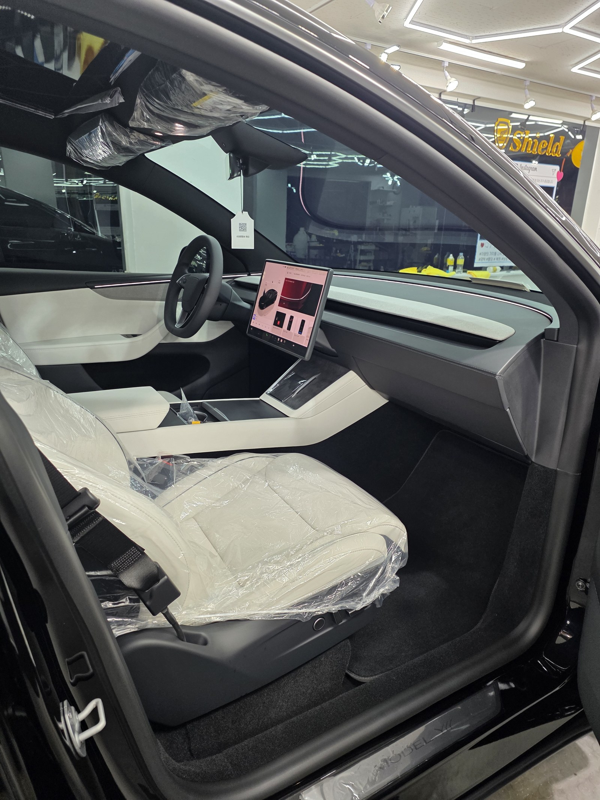
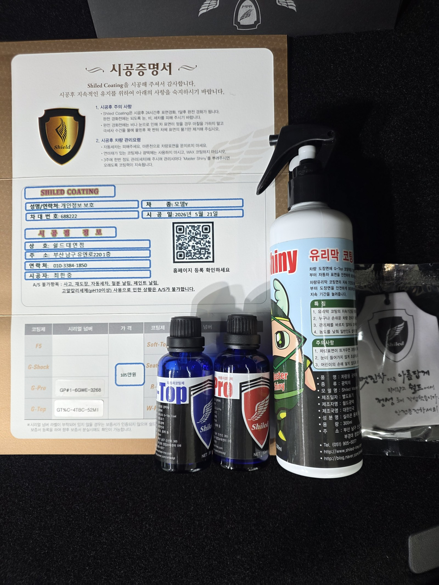

테슬라 모델Y 검정입니다. 아직 출고 전, 새 차입니다.
이 차는 출고 전에 G-PRO+G-TOP 듀얼코팅으로 진행했습니다.

검정 신차에 왜 듀얼코팅인가
검정은 잔기스와 물자국이 가장 잘 보이는 색상입니다.
스크래치는 물론 세차 후 남는 물자국까지 도드라지는 게 검정 도장입니다. 듀얼코팅(G-PRO+G-TOP)은 스크래치 내성과 발수·방오성을 동시에 올려주는 조합이라, 검정 차량이 가진 두 가지 약점을 함께 커버할 수 있습니다. 코팅제는 대표가 화학공학 전공으로 직접 개발·제조한 제품입니다.

시공 과정
도장면을 정리한 뒤 코팅제를 도포하고 얼룩 없이 닦아냅니다.
패널 하나하나 빛에 비춰가며 도포량과 잔여물을 확인합니다. 이 과정을 꼼꼼히 거쳐야 코팅막이 얼룩 없이 균일하게 자리 잡습니다.


새 차인데 왜 출고 전에 코팅을 하나
도장면이 가장 깨끗할 때 올리는 코팅이 가장 오래갑니다.
출고 후에는 운행과 세차로 미세한 잔기스와 오염이 쌓이기 시작합니다. 그게 쌓이기 전, 신차 상태 그대로일 때 코팅막을 입혀두는 겁니다. 그래서 쉴드광택은 출고 전 신차 시공을 맡아 진행합니다.


기술자의 팁
신차라고 바로 코팅을 올리지 않습니다. 운송·보관 중 묻은 미세 오염을 디테일링 세차와 탈지로 걷어낸 뒤에 올립니다. 깨끗한 바탕 위에 올려야 코팅이 제대로 밀착합니다.
외부만이 아니라 안까지
출고 전 차량은 안팎 컨디션을 함께 정리합니다.
실내는 아직 보호 필름과 커버가 씌워진 신차 그대로입니다. 외부 도장은 듀얼코팅으로 마감하고, 인도까지 깨끗한 상태로 관리합니다.

시공증명서를 함께 드립니다
모든 시공 차량에 시공증명서를 드립니다.
차종·시공일·코팅제 시리얼 번호가 적혀 있고, 홈페이지에 등록해 보증을 받으실 수 있습니다. 이 차는 G-PRO+G-TOP 듀얼코팅으로 기록돼 있습니다.

차종·시공일·코팅제 시리얼이 기재된 시공증명서
자주 묻는 질문
Q. 검정 신차에는 왜 듀얼코팅을 하나요?
A. 검정은 잔기스와 물자국이 가장 잘 보이는 색상입니다. 듀얼코팅(G-PRO+G-TOP)은 스크래치 내성과 발수·방오성을 동시에 올려주는 조합이라 검정 차량의 약점을 함께 커버합니다.
Q. 새 차인데 왜 출고 전에 코팅을 하나요?
A. 도장면이 가장 깨끗할 때 올리는 코팅이 가장 오래갑니다. 운행·세차로 잔기스와 오염이 쌓이기 전, 신차 상태 그대로일 때 코팅막을 입혀두면 처음 컨디션을 더 오래 지킵니다.
Q. 싱글·듀얼·트리플코팅은 어떻게 선택하나요?
A. 색감 위주면 F5, 스크래치 내성 위주면 G-PRO, 발수·방오 위주면 G-TOP을 단독으로 씁니다. 두 가지를 함께 챙기고 싶다면 듀얼, 세 가지 모두면 트리플입니다. 이 차는 G-PRO+G-TOP 듀얼코팅으로 진행했습니다.
Q. 쉴드광택 위치와 예약은 어떻게 하나요?
A. 부산 남구 유엔로220 1F 쉴드광택입니다. 예약·상담은 010-3384-1850, 대표 최한중이 직접 상담하고 책임 시공합니다.
새 차일수록 시작점이 다릅니다. 가장 깨끗할 때 입혀두십시오.
제품을 직접 만드는 사람이 직접 시공합니다.
부산에서 전기차 신차코팅을 고민 중이시면 편하게 연락 주십시오.
어떤 차를 타냐보다 어떻게 타냐가 중요합니다~!
시공 중에는 전화를 받지 못할 때가 많습니다.
카카오톡으로 차종과 원하시는 시공을 남겨주시면 확인 후 답변드립니다.
쉴드광택 · 부산 남구 유엔로220 1F · 대표 최한중